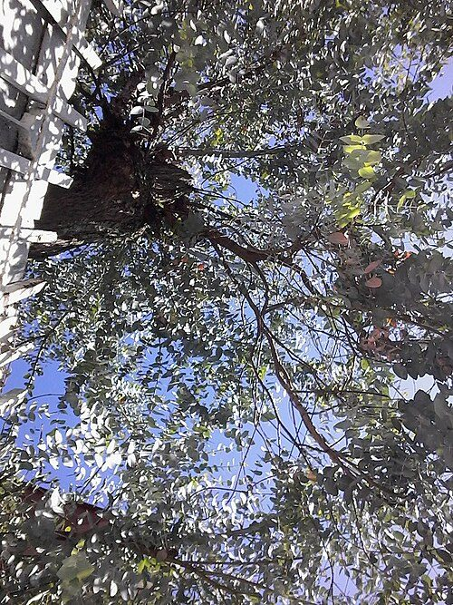

口コミ
こんなお店かもしれない
お店の名前から自然に想像できる声を、制作側が創作したものです。
以下は制作側が考えた創作のイメージ例で、実在のお客様の投稿ではありません。実際の口コミ・評価とは関係ありません。
名前が気になるので、いつか行ってみたいです。まずはInstagramをのぞいてみたいと思います。
ひとりでふらっと行ってみたいお店です。どんなお店なのか、これから少しずつ知っていきたいです。
「ユーカリ」という名前にひかれて、いつかのぞいてみたいと思います。投稿を見るのも楽しみです。
